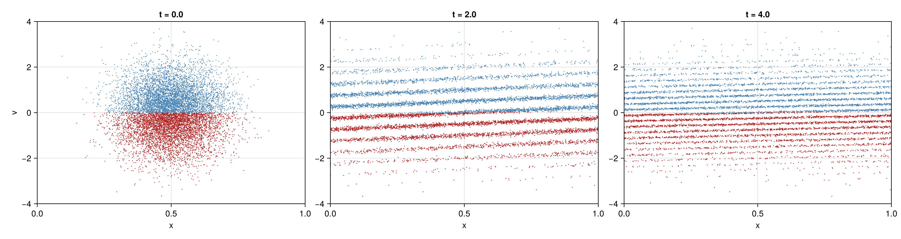
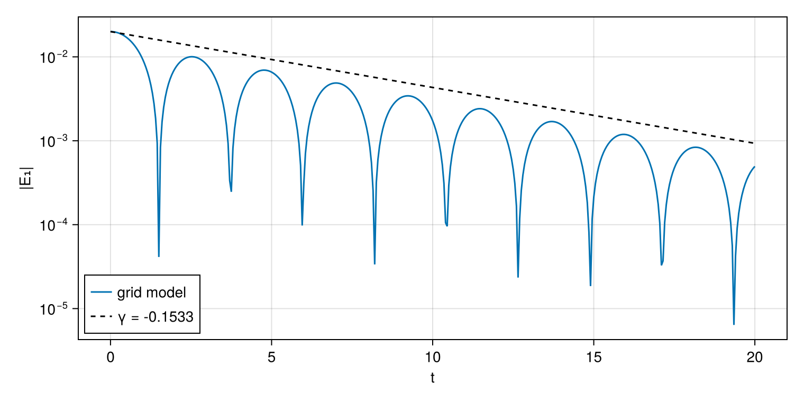

Vlasov–Poisson
The electrostatic Vlasov–Poisson system of one species of the charge $+1$ in one position and one velocity dimension is
\[\frac{\partial f}{\partial t} + v \, \frac{\partial f}{\partial x} + E \, \frac{\partial f}{\partial v} = 0 , \qquad E = - \frac{\partial \phi}{\partial x} , \qquad - \frac{\partial^2 \phi}{\partial x^2} = \rho = \int f \, dv ,\]
on a periodic interval in $x$. The periodic Poisson equation has a solution only for a source of zero mean: the solver of the potential drops the mean of $\rho$, a uniform neutralising background, and returns the potential of zero mean. The energy of the system
\[H = \frac{1}{2} \int\!\!\int v^2 f \, dx \, dv + \frac{1}{2} \int \left( \frac{\partial \phi}{\partial x} \right)^2 dx\]
is conserved. VlasovPoisson(dist, potential) is the model. Its distribution decides the discretisation: a ParticleDistribution gives the particle-in-cell method, and a GridDistribution gives the grid method of Arakawa. In both cases the potential is a Potential of PoissonSolvers.
Particles
With the particle distribution $f_p = \sum_\alpha w_\alpha \delta(x - x_\alpha) \delta(v - v_\alpha)$, the Vlasov equation becomes the equations of motion of the particles,
\[\dot{x}_\alpha = v_\alpha , \qquad \dot{v}_\alpha = E(x_\alpha) .\]
The potential is a periodic B-spline. At each evaluation of the field, the particle weights are deposited onto the spline basis, projection!(potential, dist), the Poisson problem is solved, and $E = -\partial_x \phi$ is evaluated at the particle positions. A position is reduced into the periodic domain at the evaluation, so the state keeps the unwrapped positions.
SplittingMethod splits the vector field into the advection $\dot{x} = v$ and the acceleration $\dot{v} = E(x)$. Both have exact flows, and the method composes them with the symmetric Strang composition, which is of second order.
using HDF5
using PoissonSolvers
using Random
using VlasovMethods
Random.seed!(42)
dist = initialize!(ParticleDistribution(1, 1, 10_000), NormalDistribution())
potential = Potential(PeriodicBasisSpline((0.0, 1.0), 3, 16))
model = VlasovPoisson(dist, potential)
method = SplittingMethod(model, (0.0, 4.0), 0.1)
h5file = tempname() * ".hdf5"
run!(method, h5file)
z = h5read(h5file, "z")
size(z)(2, 10000, 41)The dataset z holds the positions in z[1, :, s] and the velocities in z[2, :, s] at the time slice s. VlasovHamiltonian(model) evaluates the energy $H$ of a state, with the field energy integrated by the Gauß quadrature of the spline basis. The splitting method does not conserve $H$ exactly, but its error stays bounded:
H = VlasovMethods.VlasovHamiltonian(model)
energy = [H(0.0, z[:, :, s], (w = dist.particles.w,)) for s in axes(z, 3)]
maximum(abs, energy .- energy[1]) / energy[1]0.002360166883846112using CairoMakie
CairoMakie.activate!(type = "png")
slices = [1, 21, 41]
plot_phase_space(z, slices; xdomain = (0.0, 1.0),
titles = ["t = $(0.1 * (s - 1))" for s in slices])
The particles start from a normal density in $x$ about $x = 1/2$ and a normal distribution in $v$. The free streaming shears the distribution into filaments, and the field of the density peak accelerates the particles away from it. The colours mark the sign of the initial velocity.
Ensembles of runs
A reduced model learns from the runs of several initial conditions. sodeensemble builds one GeometricEquations.SODEEnsemble of the model, with one member per particle distribution. Each member keeps its own initial state and its own weights, and all members share the potential of the model. GeometricIntegrators.integrate(ensemble, Strang()) solves the members one after another:
using GeometricIntegrators
members = [initialize!(ParticleDistribution(1, 1, 1000), ShiftedNormalV((0.0, 1.0), u))
for u in (0.0, 0.5, 1.0)]
ensemble = sodeensemble(model, members, (0.0, 10.0), 0.1)
solution = integrate(ensemble, Strang())Grids
With the values $f_{ij}$ of a GridDistribution at the nodes $(x_i, v_j)$, the model is the semi-discrete system
\[\dot{f} = - [f, h] , \qquad h_{ij} = \frac{v_j^2}{2} + \phi_i , \qquad \phi = G \rho , \qquad \rho_i = h_v \sum_j f_{ij} ,\]
with the Arakawa discretisation $[\cdot, \cdot]$ of the canonical bracket of GeometricBrackets. The constructor assembles the $n_x \times n_x$ Green's matrix $G$ of the potential once, from an FFT solver or a matrix-free solver of PoissonSolvers, and symmetrises it. The discrete energy is then quadratic in $f$, and the implicit midpoint rule conserves it.
GeometricIntegrator(model, tspan, tstep, method) takes any ODE method of GeometricIntegrators. The default ImplicitMidpoint() conserves the energy, but its Newton solver forms a dense Jacobian of $(n_x n_v)^2$ entries. On a fine grid, an explicit method such as RK4() is the practical choice.
The Arakawa bracket wraps both directions of the grid. The scheme is valid only while $f$ vanishes at both ends of the velocity range, to eps(T) times its maximum. This is the default closure of the velocity grid; the closure of the section Bounded velocity closure does not wrap.
The example below is the linear Landau damping of the wave number $k = 0.5$ with the amplitude $0.01$. The amplitude of the first Fourier mode of the field decays at the rate $\gamma \approx -0.1533$.
using GeometricIntegrators: RK4
using HDF5
using PoissonSolvers
using VlasovMethods
k, α, nx, nv = 0.5, 0.01, 32, 129
L = 2π / k
basis = FFTWBasis((0.0, L), nx)
x = basis.xgrid[1:nx]
v = range(-8.6, 8.6; length = nv)
values = (1 .+ α .* cos.(k .* x)) .* exp.(-v' .^ 2 ./ 2) ./ sqrt(2π)
dist = GridDistribution(values, (0.0, L), (-8.6, 8.6))
model = VlasovPoisson(dist, Potential(basis))
int = VlasovMethods.GeometricIntegrator(model, (0.0, 20.0), 0.05, RK4())
h5file = tempname() * ".hdf5"
run!(int, h5file)
t = h5read(h5file, "t")
f = h5read(h5file, "z")
size(f)(4128, 401)The amplitude of the first mode of the field follows from the density of each state:
function mode1(q)
ρ = step(dist.v) .* vec(sum(reshape(q, nx, nv); dims = 2))
ϕ = solve(model.potential.solver, ρ)
return k * (2 / nx) * abs(sum(ϕ .* exp.(-im * k .* x)))
end
E₁ = [mode1(f[:, s]) for s in axes(f, 2)]
using CairoMakie
CairoMakie.activate!(type = "png")
fig = Figure(size = (760, 380))
ax = Axis(fig[1, 1]; xlabel = "t", ylabel = "|E₁|", yscale = log10)
lines!(ax, t, E₁; label = "grid model")
lines!(ax, t, E₁[1] .* exp.(-0.1533 .* t); linestyle = :dash, color = :black,
label = "γ = -0.1533")
axislegend(ax; position = :lb)
fig
The script scripts/landau_damping_1d1v.jl fits the rate to the peaks of $|E_1|$ on a finer grid, and checks it against the textbook value.
Bounded velocity closure
The keyword closure = BoundedVelocityClosure() of GeometricIntegrator(model, tspan, tstep, method; closure) bounds the velocity range instead of wrapping it, with zero inflow. The unknowns are the interior nodes $j = 2, \dots, n_v - 1$; $f$ and the Hamiltonian are read as zero on and beyond the end nodes, with $\chi$ the indicator of the unknowns. The Hamiltonian argument of the bracket is cut to the unknowns, and the field is the periodic bracket of the cut data, read at the unknowns:
\[\dot{f} = \chi \circ [P h, \chi \circ f] , \qquad P h = \chi \circ (\phi \otimes 1 + 1 \otimes \tfrac{v^2}{2}) , \qquad \phi = G \rho , \qquad \rho_i = h_v \sum_{j=2}^{n_v-1} f_{ij} ,\]
and $\dot{f} = 0$ at the end nodes. On grid functions that vanish on and beyond the end nodes, Arakawa's form $T(a, b, c) = \langle a, [b, c] \rangle$, with $\langle a, b \rangle = h_x h_v \sum_i \sum_{j=2}^{n_v-1} a_{ij} b_{ij}$, is the form of the infinite lattice, which is totally antisymmetric. So $\dot{f}$ is the field of the cyclic average of $T$, and the energy rate $\langle P h, \dot{f} \rangle = T(P h, P h, \chi \circ f)$ vanishes. The discrete energy
\[H = h_x h_v \sum_i \sum_{j=2}^{n_v-1} f_{ij} \frac{v_j^2}{2} + \frac{h_x}{2} \rho^\mathsf{T} G \rho\]
is quadratic, so the implicit midpoint rule keeps it to the Newton solve. The mass is not kept: its rate $\langle 1, \dot{f} \rangle$ is the flux $-h_x h_v \sum_i \sum_{j \in \{1, n_v\}} [P h, \chi \circ f]_{ij}$ through the end nodes.
The initial state of the run is the distribution with its end columns set to zero; the distribution itself changes only when run! writes the states back. Where $f$ vanishes on the two outermost nodes at each end, $j \in \{1, 2, n_v - 1, n_v\}$, the bounded and the periodic closure give the same field. The default is PeriodicVelocityClosure.
Reduced tensors
The bracket of the grid model is a tensor of three indices on the grid. A Galerkin reduction of the grid model contracts it with a reduced basis. Grid-based reduced tensors describes the reduced tensors.